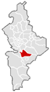
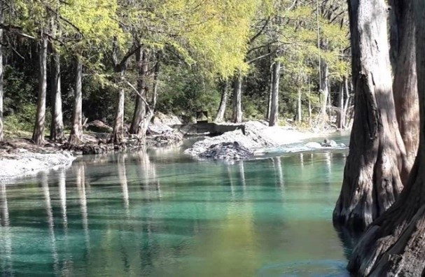
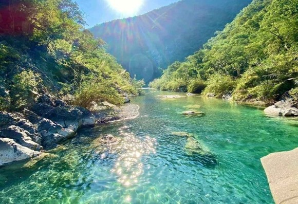

La región de La Crítica, también conocida como Región Críticola, es una importante zona agrícola ubicada en el estado de Nuevo León, en México. Esta región se extiende en los municipios de Montemorelos, Linares, Allende, General Terán y Cadereyta Jiménez, en el área noreste del estado. La región es reconocida por su clima y suelo propicios para la agricultura, lo que ha llevado al desarrollo de una industria agrícola vibrante y productiva. La Crítica se caracteriza por su topografía montañosa, con valles y laderas que ofrecen condiciones ideales para el cultivo de diversos productos.
UBICACIÓN
El municipio de Montemorelos se localiza en la parte central del estado de Nuevo León. De acuerdo a lo señalado en el mapa mexicano, geográficamente dicho municipio se encuentra entre los paralelos 25° 11' latitud norte y entre los meridianos 99° 50' longitud oeste, respecto al meridiano de Greenwich. Colinda al norte con el municipio de Cadereyta Jiménez, al sur con Linares y los Rayones, al este con General Terán y nuevamente con Linares y al oeste con los municipios de Allende, una vez más con Los Ramones y con Galeana. Debido a las diferentes elevaciones que hay en el municipio de Montemorelos, se encuentra ubicado a una altitud promedio de 430 metros sobre el nivel del mar.

Extensión
Su territorio se extiende a unos 1,706.2 kilómetros cuadrados
Clima
Montemorelos se encuentra en el grupo de clima templado, según la clasificación de Wladimir Köppen en 1936, y en el subgrupo de clima semicálido del tipo subhúmedo, según las modificaciones que elaboró Enriqueta García para la Dirección General de Geografía del Instituto Nacional de Estadística, Geografía e Informática. Cálido y seco en verano, húmedo y crudo en invierno y en resumen extremoso son las características del clima de este municipio. La temperatura media varía entre 22 °C y 24 °C y predomina en los meses de marzo, abril, octubre y noviembre. En verano se alcanzan temperaturas alrededor de los 40 °C. Seco, pero con lluvias esporádicas generalmente en septiembre y octubre.

Hidrografía
El municipio de Montemorelos cuenta con varios ríos, ninguno de ellos navegable más de caudal constante, los de mayor importancia son El Ramos, El Pilón, El Blanquillo y El Potosí.

Orografía
- SIERRAS: Sierra Los Nogales, que forma parte de la Sierra Madre Oriental.
- LOMAS: Prieta, Graniza, El Amole, Las Flores, Alta, Olmo, Labrantía, La Guerra, Las Tres Lomas, La Perrita, Sabinillas, Blanca, Garrapatas, Linda, El Vinatero, El Calvario y El Guaje.
- CERROS: La Mora, La Leona.
- MESAS: Alto, Ébano, El Tepetate.